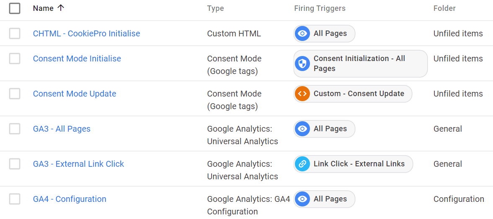

CookiePro the Hard Way
December 1st 2021
It's taken a few days and I've made at least one 'duh' style of error, but I've managed to do A Thing.
One of the mainstays of my day job is figuring out how to implement 'stuff' using only Google Tag Manager. The motivation for that is some clients use an outside agency for web dev tasks and somtimes that agency is... difficult. Or slow. Or both. The ability to 'just do it in GTM' circumvents those difficulties and makes for a happy client.
Recently I set out to discover if it was possible to implement CookiePro (from OneTrust) using only GTM and in such a way that it interfaced reliably with Google Consent Mode.
As of this evening, it works.
I'll see about doing more of a write-up of this, but I need to put it to more of a robust test before I call this a definite win.